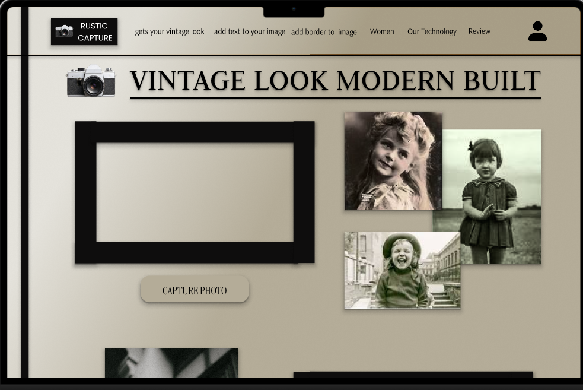
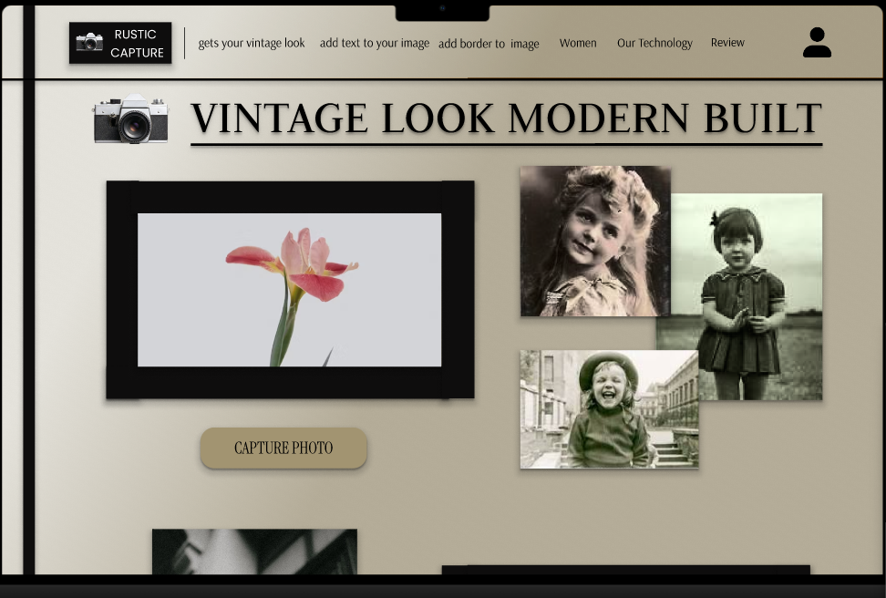
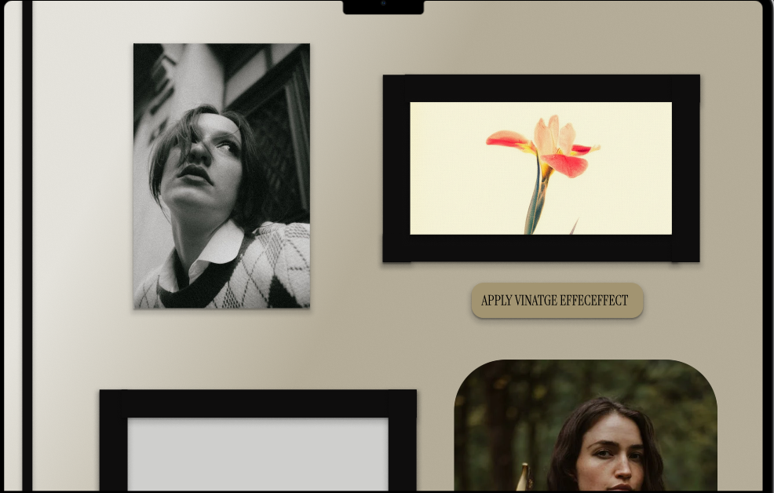
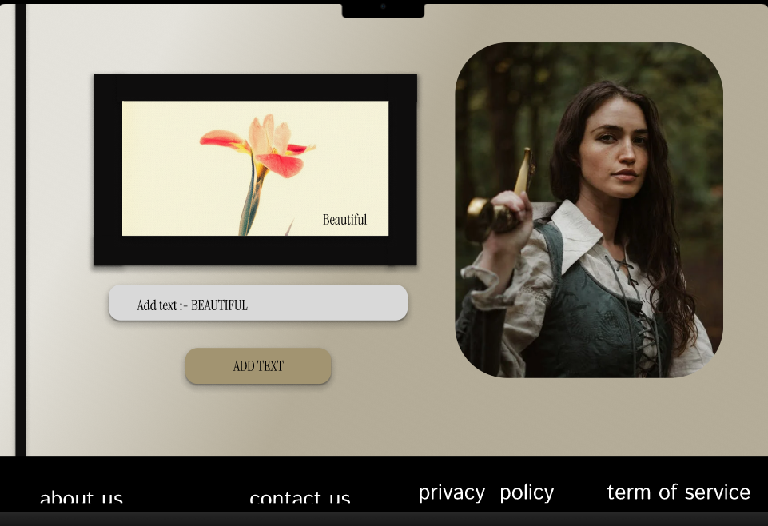
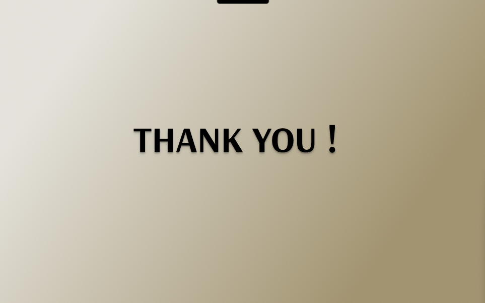

In an age of pristine digital photography, many users desire the unique aesthetic and charm of older, analog photos. The challenge was to create an intuitive and accessible platform that allows users to easily apply authentic-looking vintage effects to their modern images, without requiring complex photo editing software.
Below are key screens illustrating the application's interface and capabilities:
Original Image Uploaded – A vibrant flower ready for transformation.
Vintage Effect Applied – Sepia-toned aged filter applied.
Text Addition – Vintage image with custom text: "Beautiful".
Gallery View – Rustic homepage/gallery showcasing vintage results.
Thank You Screen – End page of the UI flow.